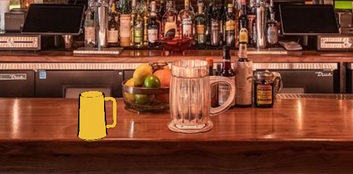
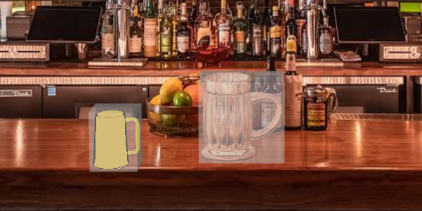
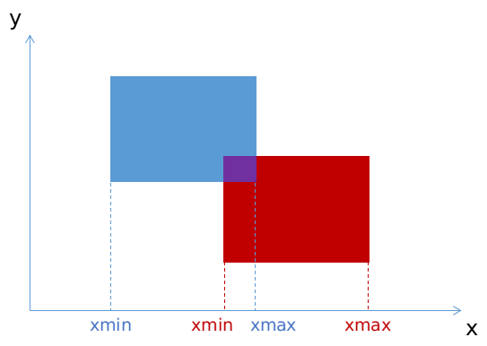

Axis-Aligned Bounding Box (AABB)
Faire vite et simple en calculant les collisions entre les boîtes englobantes, sur les 3 axes.

function intersect(a, b) {
return (a.minX <= b.maxX && a.maxX >= b.minX) &&
(a.minY <= b.maxY && a.maxY >= b.minY) &&
(a.minZ <= b.maxZ && a.maxZ >= b.minZ);
}
| Inconvénients | Avantages |
|---|---|
| Nécessite de calculer les boîtes englobantes | Rapide à calculer |
| Nécessite des boîtes alignées sur un même repère | Rapide à implémenter |
| Pas très précis | Suffisamment précis pour notre jeu |